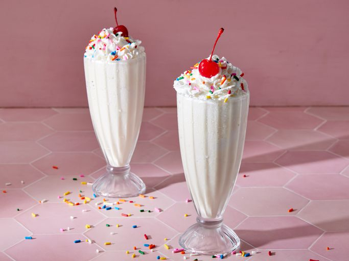
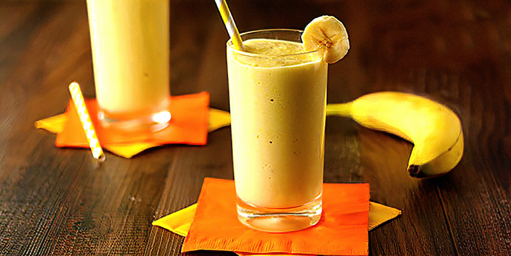
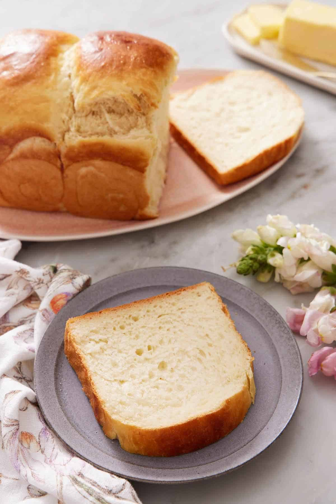

Types of Milk
Milk comes in many forms: cow's milk, almond milk, soy milk, and oat milk, each offering unique benefits.
Health Benefits of Milk
- High in calcium and vitamin D.
- Supports bone health and strong teeth.
- Provides protein for muscle growth and repair.
- Helps with hydration and weight management.
History of milk
Milk has been a vital part of human diets for thousands of years, dating back to around 6000 BCE when early agricultural societies in the Middle East first domesticated animals like cows, goats, and sheep for dairy production. Over time, milk became a staple food source across various cultures due to its rich nutritional value. Advances in farming, refrigeration, and pasteurization throughout history have made milk safer and more widely available. Today, milk continues to be a key ingredient in many traditional diets and a base for numerous dairy products worldwide.
Milk Recipes
Milk is a versatile ingredient that can be used in a variety of dishes, both sweet and savory. Here are some milk-based recipes to try:
1. Classic Milkshake
A rich and creamy milkshake made with milk, ice cream, and your choice of flavorings like chocolate or vanilla. Perfect for a cool treat on a warm day!
2. Creamy Mashed Potatoes
Butter and warm milk are the secret to perfectly creamy mashed potatoes. Add salt, pepper, and a bit of garlic for extra flavor.

3. Homemade Pudding
This simple pudding recipe combines milk, sugar, cornstarch, and eggs to create a silky smooth dessert. Flavor it with vanilla or chocolate for a delicious treat!

4. Milk and Honey Smoothie
A refreshing smoothie made with milk, honey, and fresh fruits. Add banana, berries, or your favorite fruit for a nutritious snack!
5. Hot Chocolate
The classic hot chocolate recipe uses milk, cocoa powder, and sugar to create a rich, warming beverage. Top with whipped cream or marshmallows for a decadent finish.

6. Milk Bread
This soft and fluffy bread is made with milk, butter, and a touch of sugar. Perfect for sandwiches or as a side with soups and stews.
Milk Knowledge Quiz
Test your knowledge of milk! Answer the questions below.